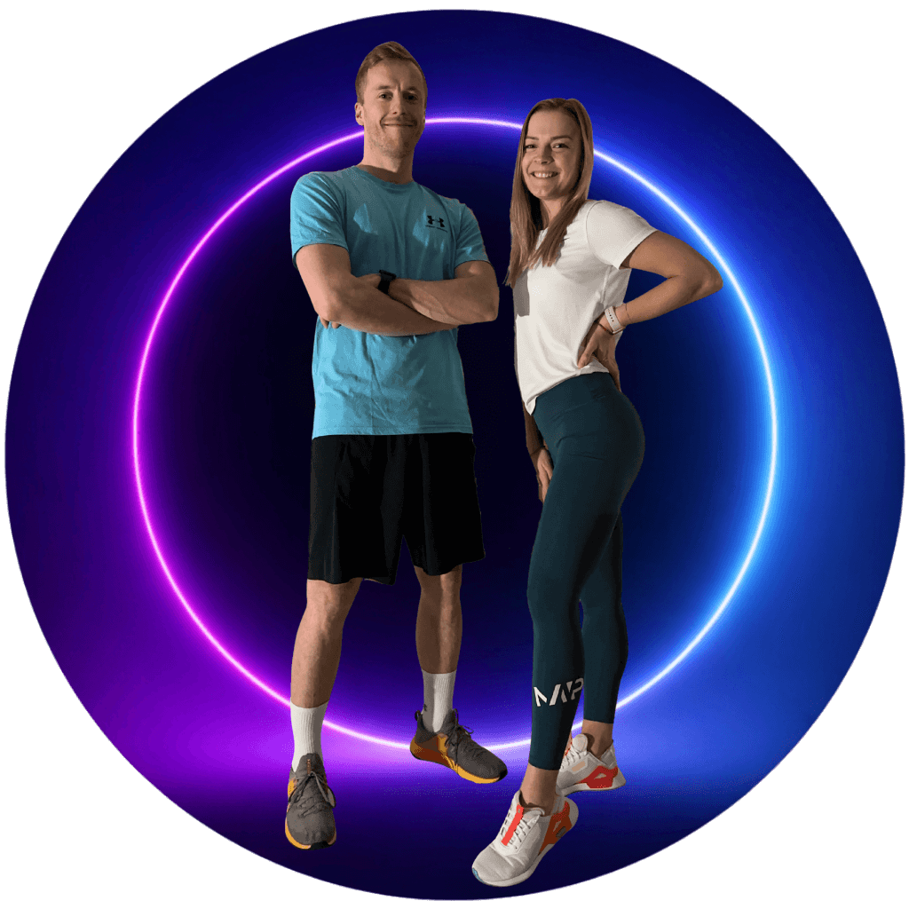

1
Vyber podle situace
Začni kategorií, kterou právě řešíš. Nemusíš číst všechno popořadě.

Fit bez časuPraktický e-book zdarma
Jednoduchá inspirace z běžných potravin pro dny, kdy nemáš čas stát hodinu v kuchyni.
Než začneš
Tenhle e-book vznikl pro dny, kdy se schůzky protáhnou, doma čeká další seznam úkolů a na vaření zbývá jen pár minut.
Nenajdeš tu složité recepty ani suroviny, které použiješ jednou a pak zůstanou ve skříňce.
Vybrali jsme 15 jídel z běžných potravin. Jsou rychlá, srozumitelná a poskládaná tak, aby se hodila do normálního pracovního týdne.
Vyber si dnes klidně jen jedno. O to přesně jde.
Začni kategorií, kterou právě řešíš. Nemusíš číst všechno popořadě.
U každého receptu najdeš jednoduchou záměnu. Ber ji jako zkratku, ne jako povinnost.
Označ si tři až pět jídel, která ti sednou. Příště už nebudeš začínat od nuly.
Jednoduchý princip
Když chceš jídlo poskládat bez receptu, stačí si pohlídat čtyři jednoduché části. Nemusí být pokaždé dokonalé a ne každá svačina nebo dezert potřebuje všechny čtyři.
Vejce, skyr, tvaroh, cottage, kuře, tuňák, tofu nebo luštěniny.
Pečivo, vločky, rýže, těstoviny, kuskus, brambory nebo tortilla.
Čerstvá i mražená. Vyber to, co máš doma a co nemusíš dlouho chystat.
Ořechy, semínka, olivový olej, pesto, avokádo nebo ořechové máslo.
Skyr + vločky + ovoce + pár ořechů. Hotovo bez vaření a bez složitého počítání.
Nečekej na ideální nákup. Využij záměny u receptů a poskládej jídlo z toho, co právě máš.
Ráno bez zdržování
Všechno jen nasypeš do misky, takže se hodí i na ráno, kdy odcházíš za deset minut.
Jedna pánev, jeden toast a snídaně, která funguje i jako rychlý brunch o víkendu.
Teplá snídaně bez hlídání hrnce, kterou můžeš připravit rovnou v misce.
Do práce i na cestu
Slaná svačina z pár surovin, která se snadno zabalí do krabičky.
Když nestíháš ani krabičku, všechny suroviny rozmixuješ a vezmeš s sebou.
Křupavá sladká svačina, která uspokojí chuť na něco dobrého bez pečení.
Hotovo dřív než rozvoz
Kuskus se připraví bez vaření a zbytek zvládneš nakrájet, než nabobtná.
Maso nakrájené na malé kousky je rychle hotové a tortilla se dobře jí i mimo domov.
Ideální způsob, jak během pár minut využít rýži uvařenou z předchozího dne.
Po dlouhém dni
Omáčka je hotová bez dalšího hrnce a špenát můžeš přidat rovnou k těstovinám.
Konzervovaná cizrna ušetří vaření a všechno připravíš na jedné pánvi.
Brambory uvaří mikrovlnka, takže se obejdeš bez dlouhého čekání u sporáku.
Když přijde chuť na sladké
Krém umícháš v jedné misce a chutná jako dezert i bez složitého pečení.
Těsto připravíš vidličkou a na pánev dáváš malé lívanečky, které jsou rychle hotové.
Křupavý dezert bez trouby, ideální když chceš využít jedno jablko a pár vloček.
Co dál
Pokud nechceš pořád znovu řešit, co a kolik si dát, v Jídelníčku pro zdravé hubnutí dostaneš celý systém poskládaný podle svého příjmu.
Zjistit více o Jídelníčku pro zdravé hubnutí →Kliknutím se otevře veřejná stránka Fit bez času s podrobnostmi o Jídelníčku.